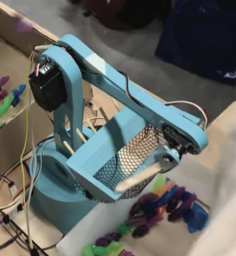
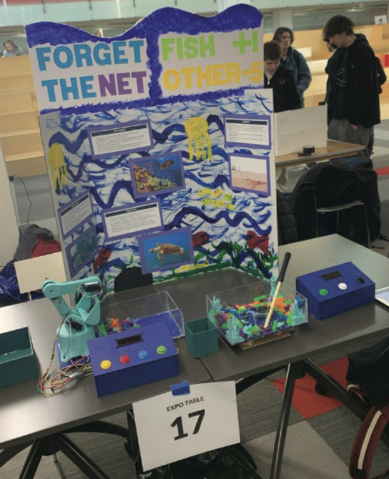

I got into engineering the usual way: LEGOs as a kid, then robotics in middle school, where I fell for the design process — the loop of building something, watching it fail, and figuring out why. I decided to study it properly at Northeastern University, where I'm pursuing a B.S. in Mechanical Engineering and Design, class of 2027.
My route here wasn't the standard one. All through high school and into college I worked at pools — six summers, ending up as head lifeguard and manager running a facility with 500+ visitors a day. Pump rooms, heaters, filtration, water chemistry: I learned how mechanical systems behave in the real world before I ever modeled one. When I got to my BIM co-op at T.G. Gallagher and started modeling MEP systems in Revit, half of it was already familiar. I'd just seen it from the other side of the wall.
That co-op changed what I want to do. I spent four months building C# automation for Revit and Plant 3D — 13 custom workflows — plus modeling air handlers and building piping specs from real supplier data. I kept noticing the same thing: the friction in construction isn't usually the engineering, it's the information. Drawings that don't match the equipment. Specs that don't match the suppliers. Hours of clicking that a script could do. I want to work on that problem — tools that take the tedious, error-prone parts of engineering workflows off people's plates.
I'm self-taught on the software side: C#, Python, the Revit API, Dynamo, plus the usual CAD stack (SolidWorks, AutoCAD, Plant 3D, Navisworks). I pick things up fast when there's a real problem attached.
I fish, I follow the Knicks, and I make beats in FL Studio when I have time. The fishing photos on this site are mine.


The fastest way to reach me is email: pearce.oconnor1@gmail.com. I'm also on GitHub.